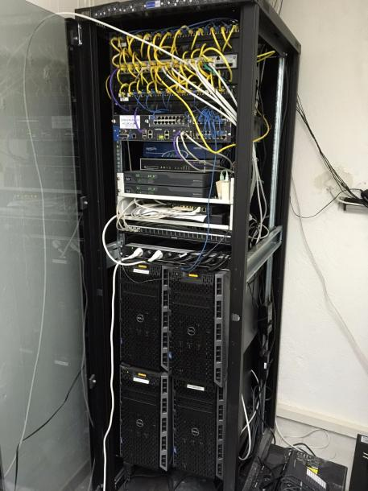
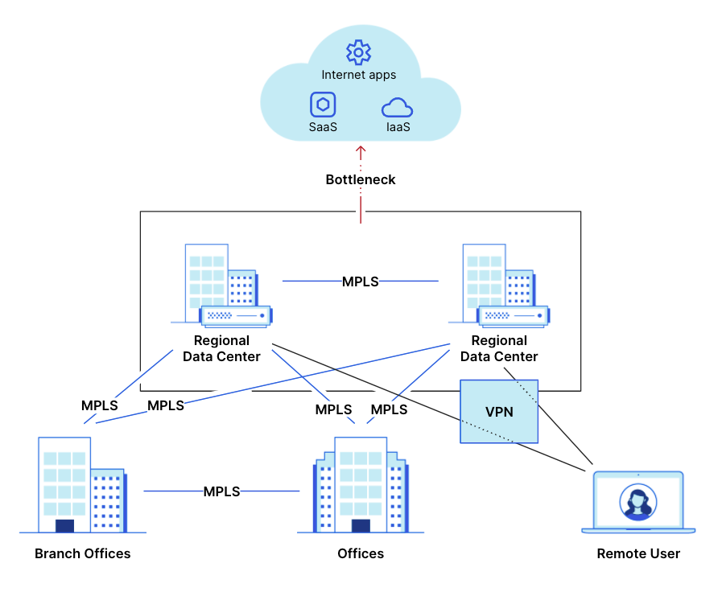

Conception et déploiement de l'architecture réseau complète d'une entreprise fictive, avec une première phase de simulation sur Cisco Packet Tracer avant la mise en production sur équipements réels.
Garantie de la haute disponibilité, de la segmentation et de la sécurité des interconnexions :
Infrastructure complète et sécurisée déployée avec succès en environnement simulé et maquette réelle.

La formation CCNA 1 (Introduction to Networks) pose le socle théorique de l'administration des réseaux informatiques : modèles de communication, adressage et configuration initiale des équipements Cisco.
Apprentissage intensif des compétences fondamentales :
Obtention de la certification Cisco CCNA 1, validant l'acquisition des principes fondamentaux des réseaux.
SAÉ 33 (Situation d'Apprentissage et d'Évaluation) : Mise en place d'un réseau d'entreprise concret sur des équipements actifs en salle de TP.
Déploiement et configuration d'architecture physique avec :
Validation concrète sur maquettes matérielles réelles en équipe. (Les boutons ne sont pas encore fonctionnels, car ce projet est en cours de développement.)


SAÉ 21 : Construction virtuelle d'un réseau d'entreprise complet et fonctionnel en utilisant le simulateur Packet Tracer.
Segmenter l'infrastructure réseau, sécuriser par firewall, établir une DMZ et raccorder le réseau extérieur. Principales technologies mises en œuvre :
Livrable complet d'une simulation Packet Tracer parfaitement interconnectée avec rapports d'architecture détaillés.
SAÉ 12 : Initiation aux techniques d'analyse de trafic réseau et de diagnostic actif de pannes.
Utilisation avancée de l'outil Wireshark pour analyser, filtrer et inspecter les paquets transitant sur le lan local. Commandes système utilisées :
Compréhension granulaire du modèle OSI à travers la capture de trames réelles.